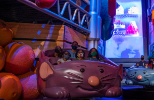
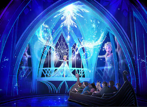
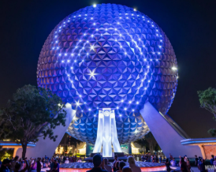
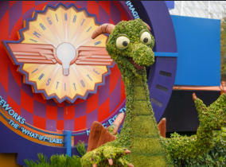
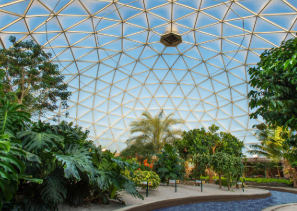
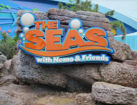
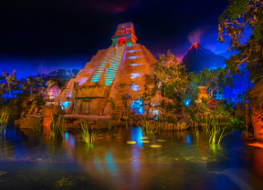

Epcot - Kid Friendly Day
A day for the whole family to enjoy at Epcot. Making sure that you get to the parks early is very important especially if you have kids that don't like to wait in long lines. By getting to the parks early you eliminate time that you would be wasting in lines.
Remy's Ratatouille Adventure
The first ride that you want to go to when you are at Epcot is Remy's Ratatouille Adventure. This ride is Epcot's second newest ride and because of that it gets a long wait time very fast. One of the best ways to get to this ride right when the park opens is to take the skyliners and they will drop you off right next to France which is where this ride is located which helps you beat the crowd that is coming in from the park entrance.
Frozen Ever After
This ride also picks up quite the line so it is good to head over here before it gets too long. This ride is located over in Norway so it is a bit of a walk from Remy but it is important to hit this one early.
Spaceship Earth
This ride is very informational as it takes you back in time and takes you through the history of humans starting with the ice age. At the end of this ride there is also a cool playground where you can do all kinds of cool futuristic things.
Journey Into Imagination with Figments
This ride is my personal favorite. I love Figment he is so funny and I love going through his imagination lab. This ride never has too long of a wait so there is no need to worry about the line.
Living with the Land
This boat ride is not too far from Figment. You get to see how Disney grows their crops and you also get to see one of their fish farms. This ride is also very informational.
The Seas with Nemo and Friends
Right around the corner from Living with the Land you can find this ride. This is the perfect ride for little kids because you get to go on a little adventure with Nemo and see all of his friends while you are at it. After you get off this ride you get to walk around an aquarium where lots of different animals can be found. There is also lots of opportunities to get fun pictures
Gran Fiesta Tour Starring The Three Caballeros
Finally end your day in Mexico with a boat ride with Donald and his two friends. This boat ride has also been recently revamped with new screens so it is better than ever.